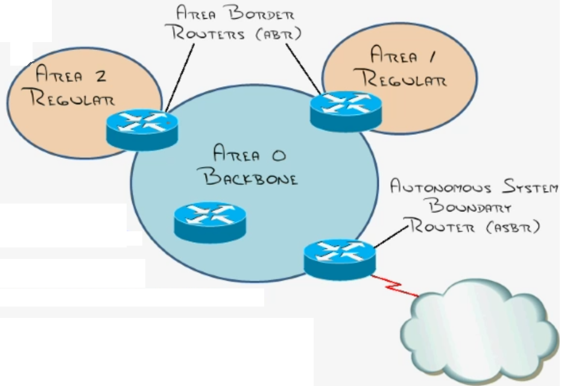
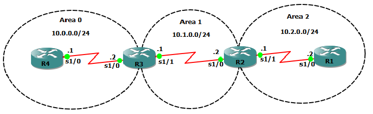
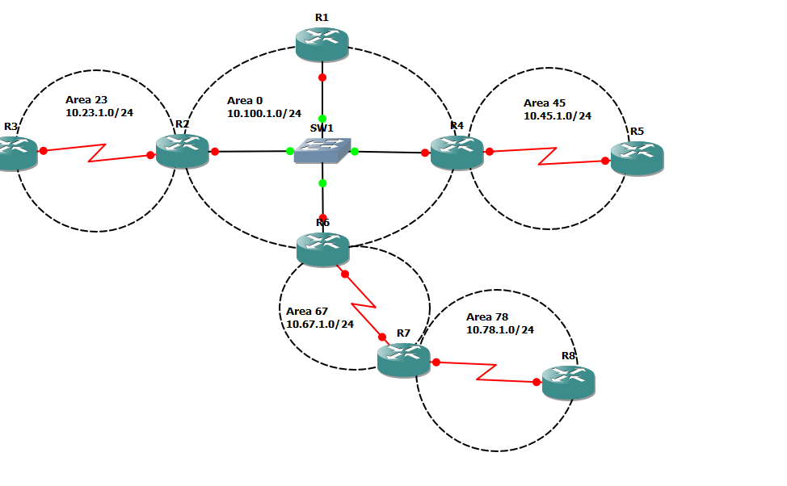

OSPF¶
Concepts and Planning¶
Link State Routing Protocols¶
Two types
IS-IS
OSPF
Maintain three tables
Neighbour table
Topology table
Routing table
Use Dijkstra’s Shortest Path First (SPF) algorithm
Send triggered updates to announce network changes
Send periodic updates (LS refresh) on long intervals
OSPF Area Design and Terms¶
{kind=link}
All areas must connect to area 0
All routers in an area have the same topology table
Goal: localize updates within an area
Requires a hierarchal design
Understanding OSPF Neighbour Relationships¶
Determine your own Router ID
The Router ID is simply the router’s name in the OSPF process
Highest active interface IP address when OSPF starts (loopbacks beat physical interfaces)
Dangerous to have a dynamic Router ID
Can be hard-coded using the “router-id” command
Add interfaces to the link state database (dictated by the network command)
Send a hello message on chosen interface(s)
Down state
Sent once every 10 seconds on broadcast/p2p networks
Sent once every 30 seconds on NMBA networks
Contains all sorts of information (* = neighbours must be same to form neighbor relationship)
Router ID
Hello and Dead Timers*
Network Mask*
Area ID*
Neighbours
Router Priority
DR/BDR IP address
Authentication Password*
Receive Hello
Init State
Check hello/dead interval
Check netmasks
Check area ID
Check authentication passwords
Send Reply Hello
2-way State
Am I listed as a neighbour in your hello packet
(if yes, reset dead timer)
(if no, add as a new neighbour)
Master-Slave Relationship Determined
Exstart State
Determined by “priority”, router-id breaks the tie
Master Sends Database Description (DBD) packet
DBD = cliff notes of link-state database
Slave sends its DBD packets
DBDs are acknowledged and reviewed
Loading state
Slave requests details (link-state requests - LSR)
Master sends updates (link-state updates - LSU)
Master requests details (LSR)
Slave sends updates (LSU)
Neighbours are synchronized
Full-state
Now it’s time to run the Dijkstra SPF algorithm to figure out what to do with all this data
OSPF’s Cost¶
56K = 1785
64K = 1562
T1 (1.544M) = 65
E1 (2.048M) = 48
Ethernet = 10
Fast Ethernet = 1
Understanding DR and BDR¶
Designated Router = DR
Backup DR = BDR
DROTHER = client router
Router send updates to DR on 224.0.0.6, DR sends updates to all its neighbours on 224.0.0.5.
1 DR and BDR for every shared segment
No DR and BDR on point-to-point links (no point)
DR and BDR Election¶
Elected via Router Priority (which is all 1 by default). The tie is broken by Router-ID. DR is only really important in NMBA networks, otherwise random DR and BDR is okay. All routers connected to DR will be in Full state. Other routers are in 2-way state (which is okay).
OSPF Packet Types¶
Hello
Database Description (DBD)
Link-State Request (LSR) * sent to master
- Link-State Advertisement (LSA)
updates about individual routes
- Link-State Update (LSU)
sent to slave
Link-State Acknowledgment (LSACK)
Basic Configuration¶
Difference between E1 and E2¶
E1 = increment their metric (used if their is more than one way out the network - out of ASBR) E2 = do not increment their metric
Basic OSPF Configuration¶
_docs/ospf-basic-configuration.zip
{kind=link}
Router 1
R1(config)#int g0/0
R1(config-if)#ip add 172.30.0.1 255.255.255.0
R1(config-if)#no shut
R1(config)#ip route 172.16.0.0 255.255.255.0 null0
R1(config)#ip route 172.16.1.0 255.255.255.0 null0
R1(config)#ip route 172.16.2.0 255.255.255.0 null0
R1(config)#ip route 172.16.3.0 255.255.255.0 null0
R1(config)#router ospf 1
R1(config-router)#net 172.30.0.1 0.0.0.0 area 0
R1(config-router)#router-id 1.1.1.1
R1(config-router)#redistribute static subnets metric 200 metric-type 2
R1(config-router)#summary-address 172.16.0.0 255.255.252.0
R1(config-router)#auto-cost reference-bandwidth 1000
R1(config-router)#do wr
Router 2
R2(config)#int g0/0
R2(config-if)#ip add 172.30.0.2 255.255.255.0
R2(config-if)#ip ospf priority 0
R2(config-if)#no shut
R2(config-if)#int s1/0
R2(config-if)#ip add 172.30.10.2 255.255.255.0
R2(config-if)#band 500
R2(config-if)#no shut
R2(config-if)#router ospf 1
R2(config-router)#network 172.30.0.2 0.0.0.0 area 0
R2(config-router)#router-id 2.2.2.2
R2(config-router)#network 172.30.10.2 0.0.0.0 area 10
R2(config-router)#area 10 range 10.10.0.0 255.255.252.0
R2(config-router)#auto-cost reference-bandwidth 1000
R2(config-router)#do wr
Router 3
R3(config)#int g0/0
R3(config-if)#ip add 172.30.0.3 255.255.255.0
R3(config-if)#ip ospf priority 0
R3(config-if)#no shut
R3(config-if)#int s1/0
R3(config-if)#ip add 172.30.20.3 255.255.255.0
R3(config-if)#band 500
R3(config-if)#no shut
R3(config)#router ospf 1
R3(config-router)#router-id 3.3.3.3
R3(config-router)#net 172.30.0.3 0.0.0.0 area 0
R3(config-router)#net 172.30.20.3 0.0.0.0 area 20
R3(config-router)#area 20 range 10.20.0.0 255.255.252.0
R3(config-router)#auto-cost reference-bandwidth 1000
R3(config-router)#do wr
Router 4
R4(config)#int s1/0
R4(config-if)#ip add 172.30.20.4 255.255.255.0
R4(config-if)#no shut
R4(config-if)#band 500
R4(config-if)#int lo1
R4(config-if)#ip add 10.20.0.1 255.255.255.0
R4(config-if)#int lo2
R4(config-if)#ip add 10.20.1.1 255.255.255.0
R4(config-if)#int lo3
R4(config-if)#ip add 10.20.1.1 255.255.255.0
R4(config-if)#ip add 10.20.2.1 255.255.255.0
R4(config-if)#int lo4
R4(config-if)#ip add 10.20.3.1 255.255.255.0
R4(config)#router ospf 1
R4(config-router)#router-id 4.4.4.4
R4(config-router)#network 10.0.0.0 0.255.255.255 area 20
R4(config-router)#network 172.30.20.4 0.0.0.0 area 20
R4(config-router)#auto-cost reference-bandwidth 1000
R4(config-router)#do wr
Router 5
R5(config)#int s1/0
R5(config-if)#ip add 172.30.10.5 255.255.255.0
R5(config-if)#band 500
R5(config-if)#no shut
R5(config-if)#int lo1
R5(config-if)#ip add 10.10.0.1 255.255.255.0
R5(config-if)#ip ospf network point-to-point
R5(config-if)#int lo2
R5(config-if)#ip add 10.10.1.1 255.255.255.0
R5(config-if)#int lo3
R5(config-if)#ip add 10.10.2.1 255.255.255.0
R5(config-if)#int lo4
R5(config-if)#ip add 10.10.3.1 255.255.255.0
R5(config)#router ospf 1
R5(config-router)#router-id 5.5.5.5
R5(config-router)#network 10.10.0.0 0.0.255.255 area 10
R5(config-router)#network 172.30.10.5 0.0.0.0 area 10
R5(config-router)#auto-cost reference-bandwidth 1000
R5#wr
Advanced Configuration¶
OSPF Network Types¶
Broadcast, multi-access networks
Example: Ethernet, token ring
Single operation mode
DR/BDR election, 10 sec. hellos, DUAL multicast add.
Point-to-Point networks
Example: T/ Cas, ISDN BRI/PRI
Single operation mode
No DR/BDR, 10 sec. hellos, single multicast add.
Non-Broadcast Multi-access (NBMA) networks
Ex: Frame-relay, ATM
Five modes of operation
Non-broadcast (NBMA) - RFC standard
Point-to-Point - RFC standard
Point-to-Point - CISCO proprietary
Broadcast - CISCO proprietary
Point-to-Multipoint, non-broadcast - CISCO proprietary
Non-Broadcast Mode¶
Default mode for x.25, FR, ATM
Neighbours statically configured
Must be one subnet
Acts like a LAN environment
DR/BDR elected (must have full connectivity!)
Point-to-Multipoint Mode¶
Fixes issues with NMBA
Requires single subnet
No DR/BDR elected
Neighbours automatically form (must be able to send pseudo-broadcasts sent over 224.0.0.5)
Point-to-Point Mode¶
Uses separate sup-interfaces
Requires different subnets
No DR/BDR elected
Neighbours automatically form
OSPF Advanced Configuration¶
_docs/ospf-advanced-configuration.zip
{kind=link}
Router 1
R1(config-router)#int lo0
R1(config-if)#ip add 1.1.1.1 255.255.255.0
R1(config-if)#ip ospf network point-to-point
R1(config)#int s1/0
R1(config-if)#encap frame-relay
R1(config-if)#no shut
R1(config-if)#int s1/0.1
R1(config-if)#int s1/0.1 multi
R1(config-subif)#ip add 10.12.3.1 255.255.255.0
R1(config-subif)#frame-relay map ip 10.12.3.2 102
R1(config-subif)#frame-relay map ip 10.12.3.3 103
R1(config)#router ospf 1
R1(config-router)#network 10.12.3.0 0.0.0.255 area 0
R1(config-router)#network 1.1.1.1 0.0.0.0 area 0
R1(config-router)#neighbor 10.12.3.2 pri 0
R1(config-router)#neighbor 10.12.3.3 pri 0
R1(config-router)#router-id 1.1.1.1
R1(config-router)#do wr
Router 2
R2(config)#int lo1
R2(config-if)#ip add 2.2.2.2 255.255.255.0
R2(config)#int s1/0
R2(config-if)#encap frame-relay
R2(config-if)#no shut
R2(config)#int s1/0.1 multi
R2(config-subif)#ip add 10.12.3.2 255.255.255.0
R2(config-subif)#frame-relay interface-dlci 201
R2(config-subif)#ip ospf priority 0
R2(config)#int s1/1
R2(config-if)#encap frame-relay
R2(config-if)#no shut
R2(config)#int s1/1.1 point-to-point
R2(config-subif)#ip add 10.24.0.2 255.255.255.0
R2(config-subif)#frame-relay interface-dlci 204
R2(config)#router ospf 1
R2(config-router)#network 10.12.3.0 0.0.0.255 area 0
R2(config-router)#network 10.24.0.2 0.0.0.0 area 24
R2(config-router)#network 2.2.2.2 0.0.0.0 area 0
R2(config-router)#router-id 2.2.2.2
R2(config-if)#do wr
Router 3
R3(config-if)#int lo0
R3(config-if)#ip add 3.3.3.3 255.255.255.0
R3(config)#int s1/0
R3(config-if)#encap frame-relay
R3(config-if)#no shut
R3(config)#int s1/0.1 multi
R3(config-subif)#ip add 10.12.3.3 255.255.255.0
R3(config-subif)#frame-relay interface-dlci 301
R3(config-subif)#ip ospf pri 0
R3(config-subif)#router ospf 1
R3(config-router)#router-id 3.3.3.3
R3(config-router)#network 10.12.3.0 0.0.0.255 area 0
R3(config-router)#network 10.35.6.3 0.0.0.0 area 356
R3(config-router)#network 3.3.3.3 0.0.0.0 area 0
R3(config)#int s1/1
R3(config-if)#encap frame-relay
R3(config-if)#no shut
R3(config)#int s1/1.1 multi
R3(config-subif)#ip add 10.35.6.3 255.255.255.0
R3(config-subif)#frame-relay map ip 10.35.6.5 305
R3(config-subif)#frame-relay map ip 10.35.6.6 306
R3(config-subif)#ip ospf hello-interval 30
R3(config)#int s1/1
R3(config-if)#do wr
Router 4
R4(config)#int s1/0
R4(config-if)#encap frame-relay
R4(config-if)#no shut
R4(config-if)#int s1/0
R4(config)#int s1/0.1 point-to-point
R4(config-subif)#ip add 10.24.0.4 255.255.255.0
R4(config-subif)#frame-relay interface-dlci 402
R4(config-fr-dlci)#int lo1
R4(config)#int lo0
R4(config-if)#ip add 4.4.4.4 255.255.255.0
R4(config)#router ospf 1
R4(config-router)#router-id 4.4.4.4
R4(config-router)#network 10.24.0.0 0.0.0.255 area 24
R4(config-router)#network 4.4.4.4 0.0.0.0 area 24
R4(config-router)#int lo0
R4(config)#int s1/0
R4(config-if)#encap frame-relay
R4(config-if)#no shut
R4(config)#int s1/0.1 point-to-point
R4(config-subif)#ip add 10.24.0.4 255.255.255.0
R4(config-subif)#frame-relay interface-dlci 402
Router 5
R5(config)#int s1/0
R5(config-if)#encap frame-relay
R5(config-if)#no shut
R5(config)#int s1/0.1 multipoint
R5(config-subif)#ip ospf hello-interval 10
R5(config-subif)#ip add 10.35.6.5 255.255.255.0
R5(config-subif)#frame-relay interface-dlci 503
R5(config-subif)#router ospf 1
R5(config-router)#router-id 5.5.5.5
R5(config-router)#net 5.5.5.5 0.0.0.0 area 356
R5(config-router)#net 10.35.6.0 0.0.0.255 area 356
R5(config)#int lo0
R5(config-if)#ip add 5.5.5.5 255.255.255.0
R5(config)#do wr
Router 6
Router 6
R6(config)#int s1/0
R6(config-if)#encap frame-relay
R6(config-if)#no shut
R6(config-if)#int s1/0.1 multi
R6(config-subif)#ip ospf hello-interval 10
R6(config-subif)#frame-relay interface-dlci 603
R6(config-fr-dlci)#ip add 10.35.6.6 255.255.255.0
R6(config)#int lo0
R6(config-if)#ip add 6.6.6.6 255.255.255.0
R6(config)#router ospf 1
R6(config-router)#router-id 6.6.6.6
R6(config-router)#net 10.35.6.6 0.0.0.0 area 356
R6(config-router)#net 6.6.6.6 0.0.0.0 area 356
R6(config)#do wr
Frame Relay Switch 1
FRS1(config)#frame-relay switch
FRS1(config)#int s1/0
FRS1(config-if)#encap frame-relay
FRS1(config-if)#frame-relay intf-type dce
FRS1(config-if)#frame-relay route 102 int s1/1 201
FRS1(config-if)#frame-relay route 103 int s1/2 301
FRS1(config-if)#no shut
FRS1(config-if)#int s1/1
FRS1(config-if)#encap frame-relay
FRS1(config-if)#frame-relay intf-type dce
FRS1(config-if)#frame-relay route 201 int s1/0 102
FRS1(config-if)#no shut
FRS1(config-if)#int s1/2
FRS1(config-if)#encap frame-relay
FRS1(config-if)#frame-relay intf-type dce
FRS1(config-if)#frame-relay route 301 int s1/0 103
FRS1(config-if)#no shut
FRS1(config-if)#do wr
Frame Relay Switch 2
FRS2(config)#int s1/0
FRS2(config)#frame-relay switch
FRS2(config)#int s1/0
FRS2(config-if)#encap frame-relay
FRS2(config-if)#frame-relay intf-type dce
FRS2(config-if)#frame-relay route 204 int s1/1 402
FRS2(config-if)#no shut
FRS2(config-if)#int s1/1
FRS2(config-if)#encap frame-relay
FRS2(config-if)#frame-relay route 402 int s1/0 204
FRS2(config-if)#frame-relay intf-type dce
FRS2(config-if)#no shut
FRS2(config-if)#do wr
Frame Relay Switch 3
FRS3(config)#frame-relay switch
FRS3(config)#int s1/0
FRS3(config-if)#encap frame-rela
FRS3(config-if)#frame-relay intf-type dce
FRS3(config-if)#frame-relay route 305 int s1/1 503
FRS3(config-if)#frame-relay route 306 int s1/2 603
FRS3(config-if)#no shut
FRS3(config-if)#int s1/2
FRS3(config-if)#encap frame-relay
FRS3(config-if)#frame-relay route 603 int s1/0 306
FRS3(config-if)#frame-relay intf-type dce
FRS3(config-if)#no shut
FRS3(config)#int s1/1
FRS3(config-if)#encap frame
FRS3(config-if)#encap frame-relay
FRS3(config-if)#frame-relay intf-type dce
FRS3(config-if)#frame-relay route 503 int s1/0 305
FRS3(config-if)#no shut
FRS3(config-if)#do wr
OSPF Area Types and Options¶
OSPF Areas and Router Types¶
Link state advertisements (LSAS) are the building blocks of OSPF; many types exist
LSA type 1: router LSA
LSA type 2: network LSA (DR generated)
LSA type 3: summary LSA (ABR summary route)
LSA type 4: summary LSA (ASBR location)
LSA type 5: external LSA (ASBR summary route)
Virtual Links¶
{kind=link}
Router 1
R1(config)#int s1/0
R1(config-if)#ip add 10.2.0.2 255.255.255.0
R1(config-if)#no shut
R1(config-if)#router ospf 1
R1(config-router)#net 10.2.0.0 0.0.0.255 area 2
R1(config-router)#router-id 1.1.1.1
R1(config-router)#do wr
Router 2
R2(config)#router ospf 1
R2(config-router)#router-id 2.2.2.2
R2(config)#int s1/0
R2(config-if)#ip add 10.1.0.2 255.255.255.0
R2(config-if)#router ospf 1
R2(config-router)#net 10.1.0.0 0.0.0.255 area 1
R2(config-router)#area 1 virtual-link 3.3.3.3
R2(config-router)#int s1/0
R2(config-if)#no shut
R2(config-if)#int s1/1
R2(config-if)#ip add 10.2.0.1 255.255.255.0
R2(config-if)#no shut
Router 3
R3(config)#int s1/0
R3(config-if)#ip add 10.0.0.2 255.255.255.0
R3(config-if)#no shut
R3(config-if)#int s1/1
R3(config-if)#ip add 10.1.0.1 255.255.255.0
R3(config-if)#no shut
R3(config-if)#router ospf 1
R3(config-router)#router-id 3.3.3.3
R3(config-router)#network 10.0.0.0 0.0.0.255
R3(config-router)#network 10.0.0.0 0.0.0.255 area 0
R3(config-router)#network 10.1.0.0 0.0.0.255 area 1
R3(config-router)#int s1/1
R3(config)#router ospf 1
R3(config-router)#area 1 virtual-link 2.2.2.2
Router 4
R4(config)#int s1/0
R4(config-if)#ip add 10.0.0.1 255.255.255.0
R4(config-if)#no shut
R4(config-if)#router ospf 1
R4(config-router)#router-id 4.4.4.4
R4(config-router)#network 10.0.0.0 0.0.0.255 area 0
R4(config-if)#do wr
Stub and Totally Stubby Areas¶
Stubby Area: blocks type 5 LSA from entering
Totally stubby Area: blocks type 3, 4, and 5 LSAs from entering (CISCO proprietary)
Not-So Stubby Area (NSSA): passes external routes through via type 7 LSAs; these convert back to type 5 once they reach the backbone
_docs/ospf-stub-and-totally-stubby-areas.zip
{kind=link}
Router 1
R1(config)#int s1/0
R1(config-if)#ip add 10.10.2.2 255.255.255.0
R1(config-if)#no shut
R1(config-if)#router ospf 1
R1(config-router)#router-id 1.1.1.1
R1(config-router)#net 10.10.2.0 0.0.0.255
R1(config-router)#net 10.10.2.0 0.0.0.255 area 2
R1(config-router)#area 2 stub
R1#wr
Router 2
R2(config)#int s1/1
R2(config-if)#ip add 10.10.2.1 255.255.255.0
R2(config-if)#no shut
R2(config-if)#int s1/0
R2(config-if)#ip add 10.10.0.3 255.255.255.0
R2(config-if)#no shut
R2(config-if)#router ospf 1
R2(config-router)#router-id 2.2.2.2
R2(config-router)#net 10.10.2.0 0.0.0.255 area 2
R2(config-router)#net 10.10.0.0 0.0.0.255 area 0
R2(config-router)#do wr
Router 4
R4(config)#int s1/0
R4(config-if)#ip add 10.10.0.4 255.255.255.0
R4(config-if)#no shut
R4(config-if)#int s1/1
R4(config-if)#ip ad 10.10.1.1 255.255.255.0
R4(config-if)#no shut
R4(config-if)#router ospf 1
R4(config-router)#router-id 4.4.4.4
R4(config-router)#net 10.10.0.0 0.0.0.255 area 0
R4(config-router)#net 10.10.1.0 0.0.0.255 area 1
R4(config-router)#area 1 stub no-summary
R4(config-router)#do wr
Router 5
R5(config)#int s1/0
R5(config-if)#ip add 10.10.1.2 255.255.255.0
R5(config-if)#no shut
R5(config-if)#router ospf 1
R5(config-router)#router-id 5.5.5.5
R5(config-router)#net 10.10.1.0 0.0.0.255 area 1
R5(config-router)#area 1 stub
R5(config-router)#area 1 nssa
R5#wr
Another Example…¶
{kind=link}
Router 1
R1(config)#int g0/0
R1(config-if)#ip add 10.100.1.1 255.255.255.0
R1(config-if)#no shut
R1(config-if)#router ospf 1
R1(config-router)#net 10.100.1.0 0.0.0.255 area 0
R1(config-router)#router-id 1.1.1.1
R1(config)#ip route 172.31.0.0 255.255.255.0 null0
R1(config)#ip route 172.31.1.0 255.255.255.0 null0
R1(config)#ip route 172.31.2.0 255.255.255.0 null0
R1(config)#ip route 172.31.3.0 255.255.255.0 null0
R1(config-router)#redistribute static subnets metric-type 1 metric 50
R1(config-router)#passive-interface default
R1(config-router)#no passive-interface g0/0
R1(config-router)#int g0/0
R1(config-if)#ip ospf authentication message-digest
R1(config-if)#ip ospf message-digest-key 1 md5 cisco
Router 2
R2(config)#int g0/0
R2(config-if)#ip add 10.100.1.2 255.255.255.0
R2(config-if)#no shut
R2(config-if)#int s1/0
R2(config-if)#ip add 10.23.1.0 255.255.255.0
Bad mask /24 for address 10.23.1.0
R2(config-if)#ip add 10.23.1.2 255.255.255.0
R2(config-if)#no shut
R2(config-if)#router ospf 1
R2(config-router)#router-id 2.2.2.2
R2(config-router)#net 10.100.1.0 0.0.0.255 area 0
R2(config-router)#net 10.23.1.0 0.0.0.255 area 23
R2(config-router)#passive-interface default
R2(config-router)#no passive-interface g0/0
R2(config-router)#no passive-interface s1/0
R2(config-router)#area 23 stub no-summary
R2(config-router)#int g0/0
R2(config-if)#ip ospf authentication message-digest
R2(config-if)#ip ospf message-digest-key 1 md5 cisco
R2(config-if)#ip ospf authentication-key cisco
Router 3
R3(config)#int s1/0
R3(config-if)#ip add 10.23.1.0 255.255.255.0
Bad mask /24 for address 10.23.1.0
R3(config-if)#no shut
R3(config-if)#int lo0
R3(config-if)#ip add 172.30.0.1 255.255.255.0
R3(config-if)#int lo1
R3(config-if)#ip add 172.30.1.1 255.255.255.0
R3(config-if)#int lo2
R3(config-if)#ip add 172.30.1.1 255.255.255.0
R3(config-if)#ip add 172.30.2.1 255.255.255.0
R3(config-if)#int lo3
R3(config-if)#ip add 172.30.3.1 255.255.255.0
R3(config-if)#router ospf 1
R3(config-router)#net 172.30.0.0 0.0.3.255 area 23
R3(config-router)#passive-interface default
R3(config-router)#no passive-interface s1/0
R3(config-router)#area 23 stub
R3(config-router)#int s1/0
R3(config-if)#ip ospf authentication-key cisco
Router 4
R4(config)#int g0/0
R4(config-if)#ip add 10.100.1.4 255.255.255.0
R4(config-if)#no shut
R4(config-if)#int s1/0
R4(config-if)#ip add 10.45.1.4 255.255.255.0
R4(config-if)#no shut
R4(config-if)#router ospf 1
R4(config-router)#router-id 4.4.4.4
R4(config-router)#net 10.100.1.0 0.0.0.255 area 0
R4(config-router)#net 10.45.1.0 0.0.0.255 area 45
R4(config-router)#net 10.45.1.0 0.0.0.255 area 45
R4(config-router)#passive-interface default
R4(config-router)#no passive-interface g0/0
R4(config-router)#no passive-interface s1/0
R4(config-router)#int g0/0
R4(config-if)#ip ospf authentication message-digest
R4(config-if)#ip ospf message-digest-key 1 md5 cisco
R4(config-if)#router ospf 1
R4(config-router)#area 45 stub
Router 5
R5(config)#int s1/0
R5(config-if)#ip add 10.45.1.5 255.255.255.0
R5(config-if)#no shut
R5(config-if)#router ospf 1
R5(config-router)#router-id 5.5.5.5
R5(config-router)#net 10.45.1.0 0.0.0.255 area 45
R5(config-router)#passive-interface default
R5(config-router)#no passive-interface s1/0
R5(config-router)#area 45 stub
Router 6
R6(config)#int g0/0
R6(config-if)#ip add 10.100.1.6 255.255.255.0
R6(config-if)#no shut
R6(config-if)#int s1/0
R6(config-if)#ip add 10.67.1.6 255.255.255.0
R6(config-if)#no shut
R6(config-if)#router ospf 1
R6(config-router)#router-id 6.6.6.6
R6(config-router)#net 10.100.1.0 0.0.0.255 area 0
R6(config-router)#net 10.67.1.0 0.0.0.255 area 67
R6(config-router)#passive-interface default
R6(config-router)#no passive-interface g0/0
R6(config-router)#no passive-interface s1/0
R6(config-router)#area 67 virtual-link 7.7.7.7
R6(config-router)#int g0/0
R6(config-if)#ip ospf authentication message-digest
R6(config-if)#ip ospf message-digest-key 1 md5 cisco
Router 7
R7(config)#int s1/0
R7(config-if)#ip add 10.67.1.7 255.255.255.0
R7(config-if)#no shut
R7(config-if)#router ospf 1
R7(config-router)#router-id 7.7.7.7
R7(config-router)#net 10.67.1.0 0.0.0.255 area 67
R7(config-router)#int s1/1
R7(config-if)#ip add 10.78.1.7 255.255.255.0
R7(config-if)#no shut
R7(config-if)#router ospf 1
R7(config-router)#net 10.78.1.0 0.0.0.255 area 78
R7(config-router)#passive-interface default
R7(config-router)#no passive-interface s1/0
R7(config-router)#no passive-interface s1/1
R7(config-router)#area 67 virtual-link 6.6.6.6
Router 8
R8(config)#int s1/0
R8(config-if)#ip add 10.78.1.8 255.255.255.0
R8(config-if)#no shut
R8(config-if)#router ospf 1
R8(config-router)#router-id 8.8.8.8
R8(config-router)#net 10.78.1.0 0.0.0.255 area 78
R8(config-router)#passive-interface default
R8(config-router)#no passive-interface s1/0